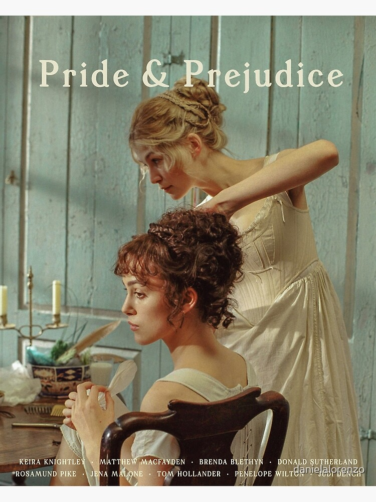

Pride and Prejudice
This is a humorous story of love and life among English gentility during the Georgian era. Mr Bennet (Donald Sutherland) is an English gentleman living in Hartfordshire with his overbearing wife (Brenda Blethyn). The Bennets' five daughters; the beautiful Jane (Rosamund Pike), the clever Elizabeth (Keira Knightley), the bookish Mary (Talulah Riley), the immature Kitty (Carey Mulligan), and the wild Lydia (Jena Malone). Unfortunately for the Bennets, if Mr. Bennet dies, their house will be inherited by a distant cousin who they have never met, so the family's future happiness and security is dependent on the daughters making good marriages. Life is uneventful until the arrival in the neighborhood of the rich gentleman Mr Bingley (Simon Woods), who rents a large house so he can spend the summer in the country. Mr Bingley brings with him his sister, Caroline (Kelly Reilly), and the dashing (and richer), but proud, Mr Darcy (Matthew Macfadyen). Love is soon in the air for one of the Bennet sisters, while another may have jumped to a hasty prejudgment. For the Bennet sisters, many trials and tribulations stand between them and their happiness, including class, gossip, and scandal.
Trailer:
Click here| Characters | Actors | <
|---|---|
| Elizabeth Bennet | Keira Knightley |
| Mr. Fitzwilliam Darcy | Matthew Macfadyen |
| Jane Bennet | Rosamund Pike |
| Charles Bingley | Simon Woods |